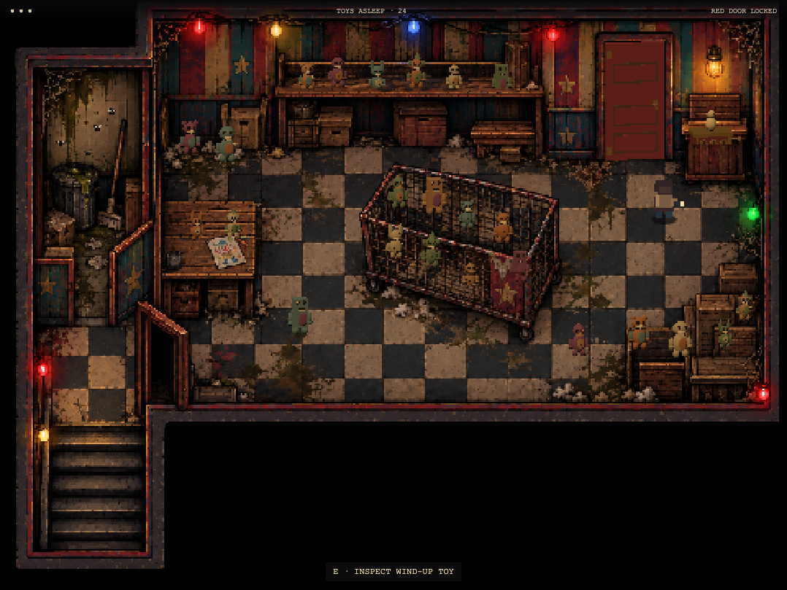
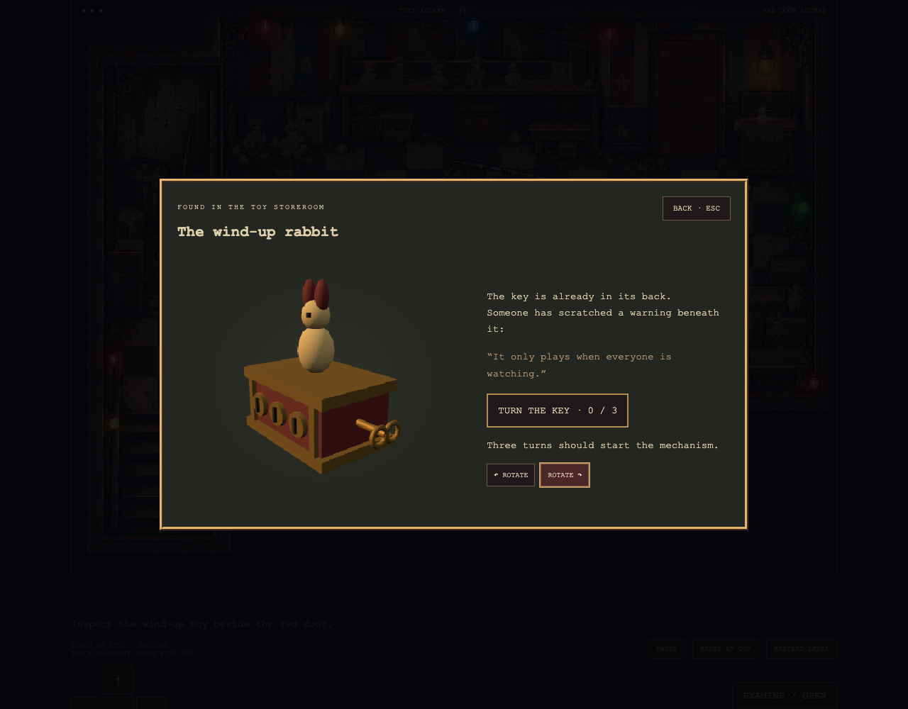
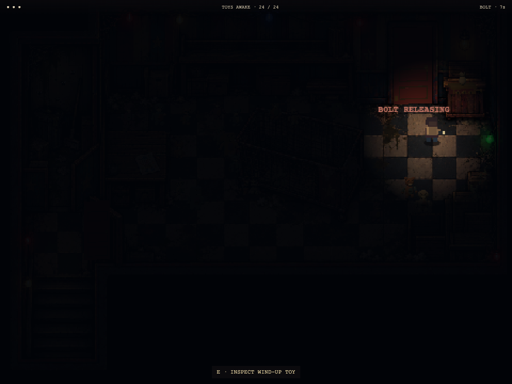
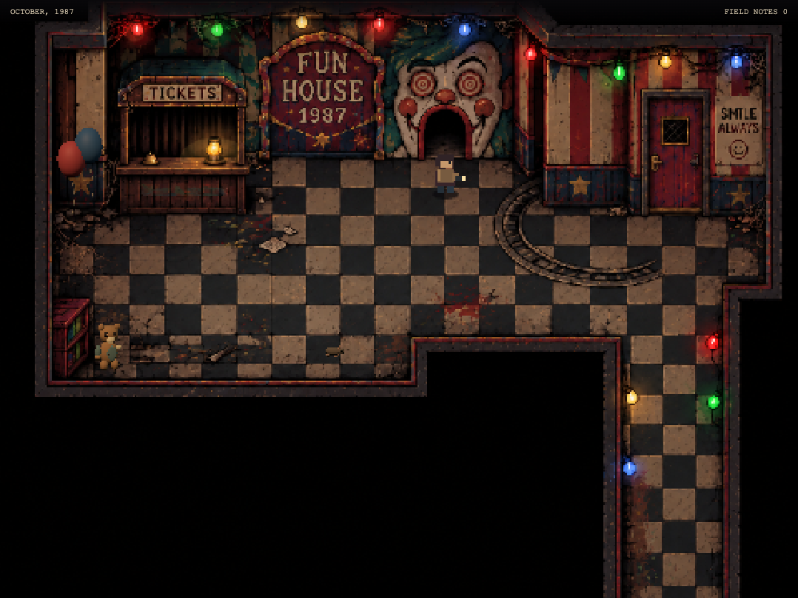
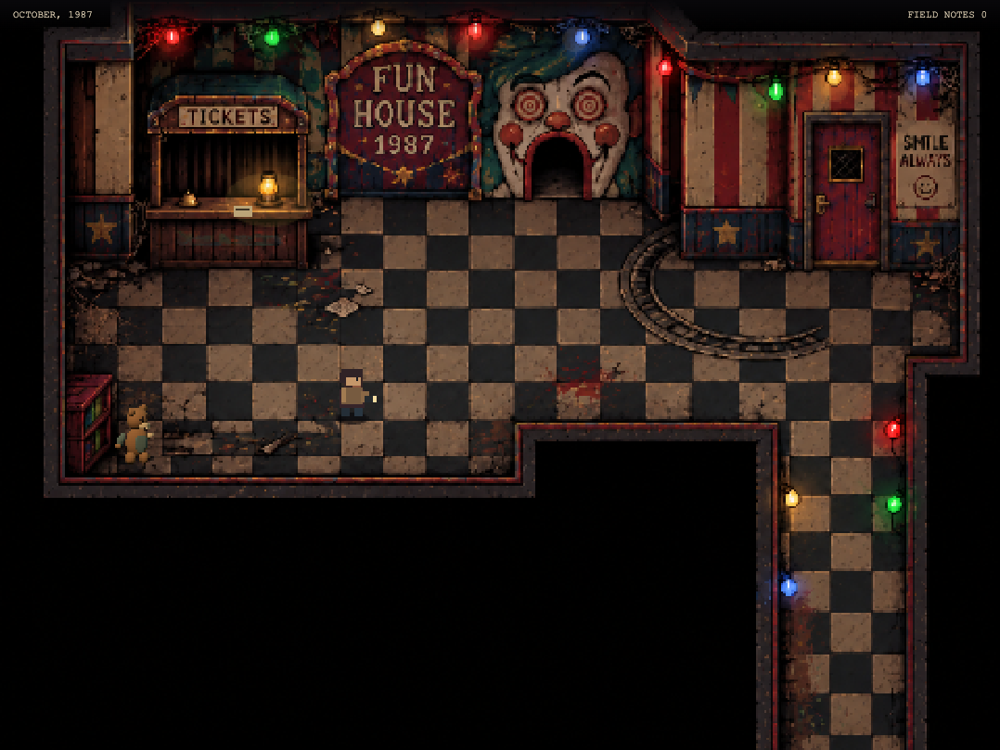

Approved concept: composition, cage, furniture, lighting and irregular room.

Playable: 24 separate articulated 3D toys, solid furniture and real doors.

Live 3D inspection: rotate the rabbit and turn the key three times.Keyboard playthrough: lights fail, the toys wake, the player circles the cage and escapes.

After the lights fail, the investigator’s flashlight and the faint red exit remain visible.
Level 2 reactions

Separate 3D rat, balloons and teddy preserve the hall layout.

Approaching pops the balloons, sends the rat running and wakes the teddy.
Retained: fixed-camera pixel painting, story notes, collisions, close-up inspection, keyboard/touch and checkpoints. Tradeoff: small procedural toys are simpler than the painted concept; scenery relief is not a fully explorable 3D room. The investigator remains the existing placeholder. This chapter ends at the red exit; future levels require review.